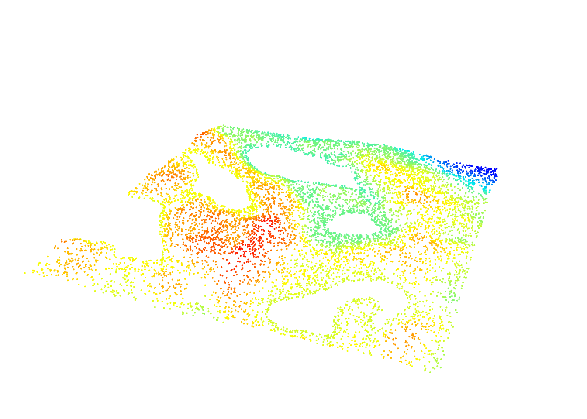
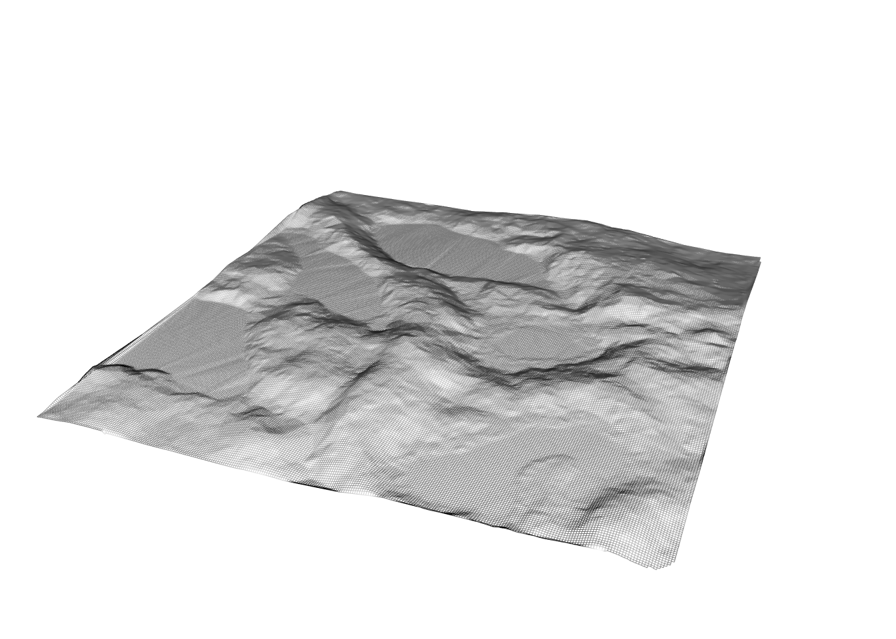
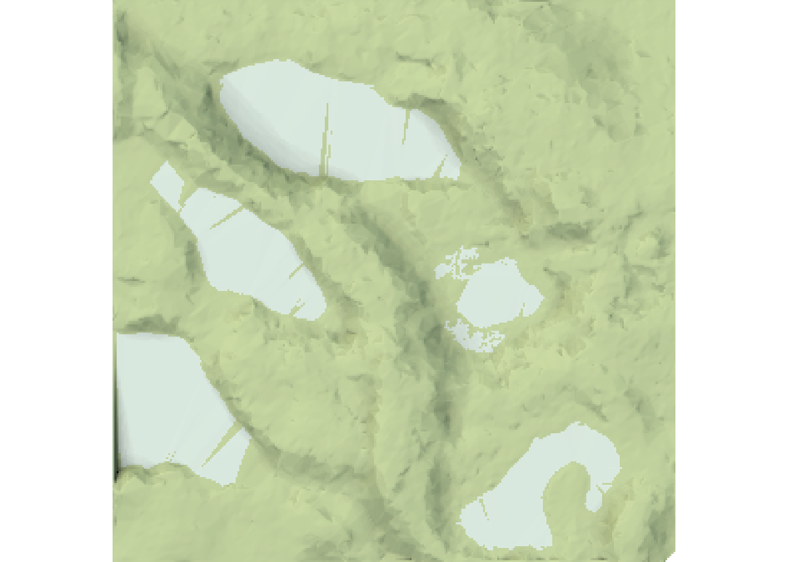
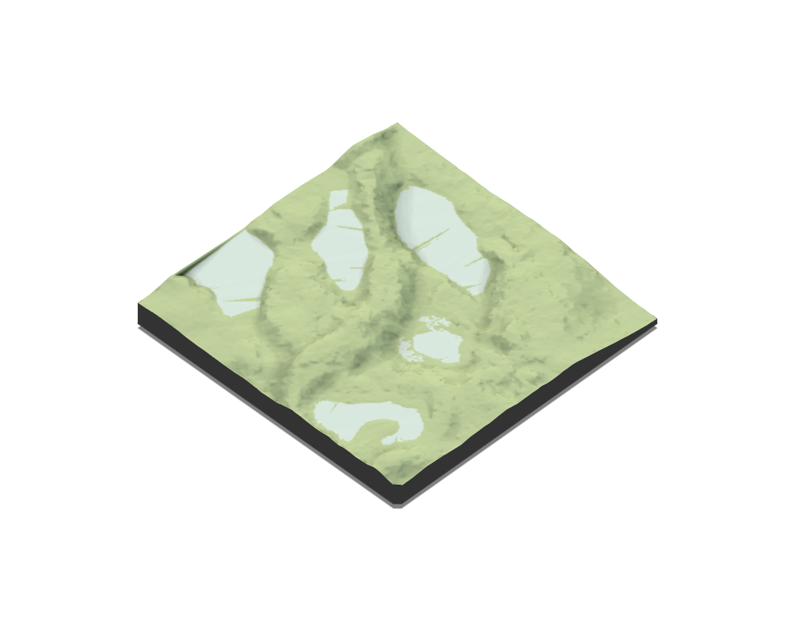

4 Digital terrain model
Generating a Digital Terrain Model (DTM) is usually the second step in processing that follows classification of ground points (see chapter 3). Put simply, a DTM can be described as an “image” of the ground. Methods to generate DTMs have been intensively studied and several algorithms have been proposed for various terrain situations. DTMs are used for a variety of purposes in practice, such as determination of the catchment basins of water retention and stream flow, or the identification of drivable roads to access resources. It also enables users to normalize point clouds i.e. subtract the local terrain from the elevation of points to allow a manipulation of point clouds as if they were acquired on a flat surface (see chapter 5).
The construction of a DTM starts with known or sampled ground points and uses various spatial interpolation techniques to infer ground points at unsampled locations. Accuracy of the DTM is very important because errors will propagate to future processing stages like tree height estimation. A wide range of methods exist for spatial interpolation of points. All of these methods are applicable to ALS data. In the following chapter we will use the classified Topography.laz data set, which is included internally within lidR.
LASfile <- system.file("extdata", "Topography.laz", package="lidR")
las = readLAS(LASfile, filter = "-keep_class 2")
plot(las, size = 4, bg = "white")
4.1 Triangular irregular network
This method is based on triangular irregular network (TIN) of ground point data to derive a bivariate function for each triangle, which is then used to estimate the values at unsampled locations (between known ground points).

Planar facets of each generated triangle are used to interpolate. Used with a Delaunay triangulation, this is the most simple solution because it involves no parameters. The Delaunay triangulation is unique and the linear interpolation is parameter-free. The drawbacks of the method are that it creates a non-smooth DTM and that it cannot extrapolate the terrain outside the convex hull delimited by the ground points since there are no triangle facets outside the convex hull. Moreover, the interpolation is weak at the edges because large irrelevant triangles are often created. It’s therefore important to compute the triangulation with a buffer to be able to crop the DTM and clear the edge artifacts.
To generate a DTM model with the TIN algorithm we use grid_terrain() where algorithm = tin().

Notice the ugly edge interpolations. This occurs because we didn’t process with a buffer.
4.2 Invert distance weighting (IDW)
Invert distance weighting (IDW) is one of the simplest and most readily available methods that can be applied to create DTMs. It is based on an assumption that the value at an unsampled point can be approximated as a weighted average of values at points within a certain cut-off distance d, or from a given number k of closest neighbours. Weights are usually inversely proportional to a power p of the distance between the location and the neighbour, which leads to the computing of an estimator.
Compared to tin() this method is more robust to edge artifacts because it uses a more relevant neighbourhood but generates terrains that are “bumpy” and probably not as realistic as those generated using TINs. There are always trade-offs to different methods!
To generate a DTM model with the IDW algorithm we use grid_terrain() where algorithm = knnidw().

Notice the bumpy nature of the DTM compared to the previous one generated with tin(). In 1D and IDW interpolation looks like:

4.3 Kriging
Kriging is the most advanced approach and utilizes advanced geostatistical interpolation methods that take into account the relationships between the returns and their respective distances from each other. lidR uses the package gstat to perform the kriging. This method is very advanced, difficult to manipulate, and extremely slow to compute, but probably provides the best results with minimal edge artifacts.
To generate a DTM model with the kriging algorithm we use grid_terrain() where algorithm = kriging().

Notice that the algorithm has issues interpolating regions with missing point such as lakes.
4.4 Pros and cons
Triangulation is a very fast and efficient method that generates very good DTMs and is robust to empty regions inside the point cloud. It is however weak at edges. Although
lidRuses the nearest neighbour to complete the missing pixel out of the convex hull of the ground points the interpolation remains poor. This algorithm must therefore always be used with a buffer of extra points to ensure that the region of interest is not on an edge. The TIN method is recommended for broad DTM computation but should be avoided for small regions of interest loaded without buffers.Invert distance weighting is fast, but approximately twice as slower than TIN. The terrain is not very realistic, but edges are likely to be free of strong edge artifacts. IDW is a compromise between TIN and KRIGING. It is recommended if you want a simple method, if you cannot load a buffer, and if edge regions are important.
Kriging is very slow because it is computationally demanding. It is not recommended for use on medium to large areas. It can be used for small plots without buffers to get a nice DTM without strong edges artifact.
Whatever the method used, edges are critical. Results will always be weak if the method needs to guess the local topography with only partial information on the neighborhood. Though different methods provide better and worse estimates in these regions, best practice is to always use a buffer to obtain some information about the neighborhood and remove the buffer once the terrain is computed.
4.5 Other methods
Spatial interpolation is not limited to the 3 methods described above. Many more have been presented and described in the literature. In section 18 we will learn how to create a plugin algorithm compatible with grid_terrain() based on a multilevel B-spline approximation (MBA) using the MBA package.

4.6 Render shaded DTM
Generating a hillshade layer in R is relatively straight forward and is done using function from the raster package. The terrain() and hillShade() functions can be combined to take the DTM raster layers as input and return a hillshade raster:
dtm_tin = crop(dtm_tin, extent(dtm_tin) - 3) # Remove 3 m of buffer
dtm_prod <- terrain(dtm_tin, opt = c("slope", "aspect"))
dtm_tin_hillshade <- hillShade(slope = dtm_prod$slope, aspect = dtm_prod$aspect)
plot(dtm_tin_hillshade, col = grey.colors(50, 0, 1), legend = FALSE)
The rayshader package also provides interesting tools to generate shaded DTM.
library(rayshader)
elmat <- raster_to_matrix(dtm_tin)
#> [1] "Dimensions of matrix are: 284x284."
map <- elmat %>%
sphere_shade(texture = "imhof1", progbar = FALSE) %>%
add_water(detect_water(elmat), color = "imhof1") %>%
add_shadow(ray_shade(elmat, progbar = FALSE), 0.5) %>%
add_shadow(ambient_shade(elmat, progbar = FALSE), 0)2D plot

3D plot
